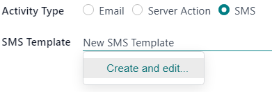
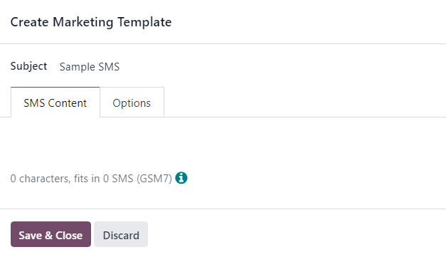

Actividades del flujo de trabajo de una campaña¶
Al crear un campaña de marketing en la aplicación Automatización de marketing, los usuarios pueden planificar actividades de marketing que se pueden activar a través de ciertas acciones o inacciones. Pueden ser actividades como correo electrónicos automatizados, SMS o acciones del servidor interno.
Agregar actividades al flujo de trabajo¶
Para agregar actividades al flujo de trabajo de una campaña de marketing, vaya a la parte inferior del formulario de detalles de una campaña ya existente o de una nueva, debajo de los campos de configuración de la audiencia objetivo, y haga clic en Nueva actividad.
Al hacerlo, se abrirá una ventana emergente para crear actividades. Esta ventana es una plantilla en blanco donde puede configurar parámetros específicos para una actividad en particular.

Primero, escriba un nombre para la actividad en el campo Nombre de la actividad. Luego, continúe con la configuración de las siguientes opciones.
Una vez que esté listo, puede hacer clic en Guardar y cerrar para guardar la actividad y cerrar el formulario, o en Guardar y crear uno nuevo para guardar la actividad y crear de manera inmediata otra actividad en un nuevo formulario, o en Descartar para eliminar la actividad.
Tipos de actividades¶
Luego, debe seleccionar el tipo de actividad. Elija entre correo electrónico, acción del servidor (una acción interna dentro de la base de datos) o SMS.
El campo debajo de tipo de actividad cambia en función del tipo de actividad que haya elegido.
Actividad de correo electrónico¶
Si el tipo de actividad es un correo electrónico, estará disponible la opción para escoger una plantilla de correo electrónico ya existente. También puede crear su propia plantilla de correo rápidamente.
Para crear una nueva plantilla directamente desde el campo plantilla de correo electrónico, comience escribiendo el título de la nueva plantilla en el campo en blanco junto a plantilla de correo electrónico y seleccione Crear y editar… para abrir una ventana emergente para crear una plantilla de marketing.

En esa ventana, cree y configure la nueva plantilla de correo electrónico.

Actividad de acción del servidor¶
Si el tipo de actividad es una :guilabel:`acción del servidor, estará disponible la opción para escoger una acción del servidor específica (por ejemplo, mensajes para los vendedores, crear leads a partir de los clics del sitio web, etc.).
También puede crear una nueva acción del servidor directamente desde la opción acción del servidor. Para ello, escriba el nombre de la nueva acción y luego haga clic en Crear y editar… desde el menú desplegable.

Otra opción es hacer clic en el campo en blanco acción del servidor para abrir un menú desplegable y seleccionar Buscar más…`para abrir la ventana emergente de :guilabel:`Buscar: acción del servidor, donde encontrará todas las opciones disponibles de acciones del servidor ya configuradas.
Para crear una nueva acción del servidor desde esta ventana, haga clic en Nuevo.

Cualquiera de las dos opciones abre otra ventana en blanco para crear una acción del servidor donde podrá crear y configurar una acción del servidor personalizada.
Actividad de SMS¶
Si el tipo de actividad es un SMS, estará disponible la opción para escoger una plantilla de SMS ya configurada. También puede crear una plantilla de SMS rápidamente desde este campo.
Para crear una nueva plantilla directamente desde el campo plantilla SMS, comience por escribir el título de la nueva plantilla en el campo en blanco junto a plantilla de SMS y seleccione Crear y editar… en el menú desplegable.
Al hacerlo, se abrirá una ventana emergente para :guilabel:`crear una plantilla de marketing ` donde podrá crear y configurar una nueva plantilla de SMS.
Activador¶
El campo activador en el formulario emergente para crear actividades le permite a los usuarios escoger cuándo se deberá activar la activad del flujo de trabajo.
Seleccione un número en la parte superior del campo. En el siguiente campo de activador, establezca si deben ser horas, días, semanas, o meses. Luego, haga clic en el campo final que dice: inicio del flujo de trabajo para abrir un menú desplegable con otras opciones de activadores.

Las opciones de activadores son las siguientes:
Inicio del flujo de trabajo: la actividad se activará en el tiempo previamente configurado cuando empiece todo el flujo.
Otra actividad: la actividad se activará en el tiempo previamente configurado después de otra actividad específica del flujo de trabajo.
Correo: abierto: la actividad se activará en el plazo que configuró con anterioridad si el destinatario abrió el correo que envió en el flujo de trabajo.
Correo: no abierto: la actividad se activará en el plazo que configuró con anterioridad si el destinatario no ha abierto el correo que envió en el flujo de trabajo.
Correo: respondido: la actividad se activará en el plazo que configuró con anterioridad si el destinatario respondió el correo que envió en el flujo de trabajo.
Correo: no respondido: la actividad se activará en el plazo que configuró con anterioridad si el destinatario no ha respondido el correo que envió en el flujo de trabajo.
Correo: se hizo clic: la actividad se activará en el plazo que configuró con anterioridad si el destinatario hizo clic en el correo que envió en el flujo de trabajo, después de abrirlo.
Correo: no se hizo clic: la actividad se activará en el plazo que configuró con anterioridad si el destinatario no hizo clic en el correo que envió en el flujo de trabajo, después de abrirlo.
Correo: devuelto: la actividad se activará en el plazo que configuró con anterioridad si el correo que envió en el flujo de trabajo se devuelve por cualquier motivo.
SMS: se hizo clic: la actividad se activará en el plazo que configuró con anterioridad si el destinatario hizo clic en el SMS que envió en el flujo de trabajo, después de abrirlo.
SMS: no se hizo clic: la actividad se activará en el plazo que configuró con anterioridad si el destinatario no hizo clic en el SMS que envió en el flujo de trabajo, después de abrirlo.
SMS: devuelto: la actividad se activará en el plazo que configuró con anterioridad si el SMS que envió en el flujo de trabajo se devuelve por cualquier motivo.
Duración de vencimiento¶
En el formulario emergente Crear actividades se encuentra la opción Duración de vencimiento.
La casilla Duración de vencimiento le proporciona la opción de configurar la actividad para detener las acciones después de un tiempo específico, es decir, después de la fecha programada.
Cuando selecciona la casilla, aparece el campo Cancelar después de, en el cual puede configurar el número de horas, días, semanas o meses para que las acciones se detengan después de la fecha inicial.

Actividades y filtros aplicados¶
En la sección Dominio del formulario emergente Crear actividades están disponibles los campos Filtro de actividad y Filtro aplicado.
El campo Filtro de actividad le proporciona la opción de configurar un dominio de filtro de destinatario que se aplica a esta actividad y a sus actividades secundarias. Además, funciona de la misma manera que un filtro de audiencia objetivo común.
Para agregar un filtro de actividad, haga clic en Agregar condición en el campo Filtro de actividad y luego configure una o varias reglas personalizadas de ecuación de filtro de actividad.
Esta opción no es un campo obligatorio. Si lo deja vacío, la actividad se aplicará a todos los registros relacionados con el público objetivo de la campaña en general.
Ver también
El campo Filtro aplicado no es configurable. En términos simples, es un resumen de cuándo se realizará la actividad solo si cumple con el dominio especificado (por ejemplo, las reglas configuradas en el campo Filtro de actividad).
Nota
Después de que los ajustes de la actividad están completamente configurados, haga clic en Guardar y cerrar para guardar la actividad y volver al formulario de la campaña de automatización de marketing. También puede hacer clic en Guardar y crear nuevo para guardar la actividad e crear otra en una nueva ventana emergente de Crear actividad, o en Descartar para eliminar la actividad y volver al formulario de la campaña de automatización de marketing.
Actividad del flujo de trabajo¶
Una vez que crea y guarda una actividad, aparece como una tarjeta de actividad en la sección del flujo de trabajo en la parte inferior del formulario de la campaña de automatización de marketing. Las métricas relacionadas con cada actividad se muestran como un gráfico de líneas.
El tiempo de activación configurado para esa actividad está disponible del lado izquierdo de la tarjeta de la actividad del flujo de trabajo en la sección Flujo de trabajo.
Una vez que se activó una actividad, del lado derecho del gráfico aparecerá el número de estas que tuvieron éxito o que fueron rechazadas.
Truco
Si el tipo de actividad es correo electrónico o SMS, puede consultar datos analíticos más detallados debajo del gráfico de actividad, por ejemplo, cuántos mensajes ha enviado así como la tasa de clics, respuestas y devueltos.
Actividades subordinadas¶
También puede agregar una actividad secundaria si hace clic en Agregar actividad subordinada que se ubica en la parte inferior de cada bloque de actividad en la sección flujo de trabajo de un formulario de una campaña de marketing.
Las actividades secundarias son subactividades que están conectadas y se activan mediante la actividad que está arriba de ellas, es decir, su actividad principal. Es fácil reconocer una actividad secundaria porque tiene una pequeña sangría debajo de su actividad principal.

Odoo proporciona varias opciones de activación para iniciar una actividad secundaria y todas dependen de las configuraciones de activación relacionadas con su actividad principal. Vaya a la actividad principal correspondiente y luego coloque el cursor sobre Agregar actividad secundaria para abrir el menú de opciones de activación de actividades secundarias.

Seleccione una de las siguientes opciones para activar una actividad secundaria:
Agregar otra actividad: agrega otra actividad de forma instantánea.
Abierto: la siguiente actividad se activa si el destinatario abre el correo.
No se abrió: la siguiente actividad se activa si el destinatario no abre el correo electrónico.
Respondido: la siguiente actividad se activa si el destinatario contesta al correo electrónico.
No se respondió: la siguiente actividad se activará si el destinatario no contesta al correo electrónico.
Seleccionado: la siguiente actividad se activará si el destinatario hace clic en un enlace incluido en el correo electrónico.
No seleccionado: la siguiente actividad se activará si el destinatario no hace clic en un enlace incluido en el correo electrónico.
Devuelto: la siguiente actividad se activará si el correo electrónico fue devuelto (no lo recibió).
Una vez que selecciona un activador, el usuario puede configurar la actividad secundaria de la misma manera que lo haría para una actividad de flujo de trabajo regular.
Ver también